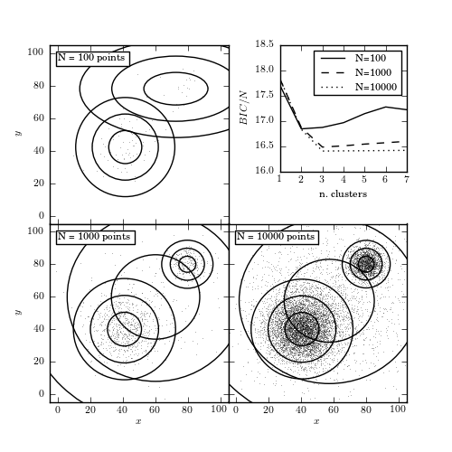

Number of Clusters for Gaussian Mixtures¶
Figure 6.9
The BIC-optimized number of components in a Gaussian mixture model as a function of the sample size. All three samples (with 100, 1000, and 10,000 points) are drawn from the same distribution: two narrow foreground Gaussians and two wide background Gaussians. The top-right panel shows the BIC as a function of the number of components in the mixture. The remaining panels show the distribution of points in the sample and the 1, 2, and 3 standard deviation contours of the best-fit mixture model.
{kind=link}
100 points convergence: [True, True, True, True, True, True, True]
1000 points convergence: [True, True, True, True, True, True, True]
10000 points convergence: [True, True, True, True, True, True, True]
# Author: Jake VanderPlas
# License: BSD
# The figure produced by this code is published in the textbook
# "Statistics, Data Mining, and Machine Learning in Astronomy" (2013)
# For more information, see http://astroML.github.com
# To report a bug or issue, use the following forum:
# https://groups.google.com/forum/#!forum/astroml-general
import numpy as np
from matplotlib import pyplot as plt
from scipy.stats import norm
from sklearn.mixture import GMM
from astroML.utils import convert_2D_cov
from astroML.plotting.tools import draw_ellipse
#----------------------------------------------------------------------
# This function adjusts matplotlib settings for a uniform feel in the textbook.
# Note that with usetex=True, fonts are rendered with LaTeX. This may
# result in an error if LaTeX is not installed on your system. In that case,
# you can set usetex to False.
from astroML.plotting import setup_text_plots
setup_text_plots(fontsize=8, usetex=True)
#------------------------------------------------------------
# Set up the dataset
# We'll use scikit-learn's Gaussian Mixture Model to sample
# data from a mixture of Gaussians. The usual way of using
# this involves fitting the mixture to data: we'll see that
# below. Here we'll set the internal means, covariances,
# and weights by-hand.
# we'll define clusters as (mu, sigma1, sigma2, alpha, frac)
clusters = [((50, 50), 20, 20, 0, 0.1),
((40, 40), 10, 10, np.pi / 6, 0.6),
((80, 80), 5, 5, np.pi / 3, 0.2),
((60, 60), 30, 30, 0, 0.1)]
gmm_input = GMM(len(clusters), covariance_type='full')
gmm_input.means_ = np.array([c[0] for c in clusters])
gmm_input.covars_ = np.array([convert_2D_cov(*c[1:4]) for c in clusters])
gmm_input.weights_ = np.array([c[4] for c in clusters])
gmm_input.weights_ /= gmm_input.weights_.sum()
#------------------------------------------------------------
# Compute and plot the results
fig = plt.figure(figsize=(5, 5))
fig.subplots_adjust(left=0.11, right=0.9, bottom=0.11, top=0.9,
hspace=0, wspace=0)
ax_list = [fig.add_subplot(s) for s in [221, 223, 224]]
ax_list.append(fig.add_axes([0.62, 0.62, 0.28, 0.28]))
linestyles = ['-', '--', ':']
grid = np.linspace(-5, 105, 70)
Xgrid = np.array(np.meshgrid(grid, grid))
Xgrid = Xgrid.reshape(2, -1).T
Nclusters = np.arange(1, 8)
for Npts, ax, ls in zip([100, 1000, 10000], ax_list, linestyles):
np.random.seed(1)
X = gmm_input.sample(Npts)
# find best number of clusters via BIC
clfs = [GMM(N, n_iter=500).fit(X)
for N in Nclusters]
BICs = np.array([clf.bic(X) for clf in clfs])
print "%i points convergence:" % Npts, [clf.converged_ for clf in clfs]
# plot the BIC
ax_list[3].plot(Nclusters, BICs / Npts, ls, c='k',
label="N=%i" % Npts)
clf = clfs[np.argmin(BICs)]
log_dens = clf.score(Xgrid).reshape((70, 70))
# scatter the points
ax.plot(X[:, 0], X[:, 1], ',k', alpha=0.3, zorder=1)
# plot the components
for i in range(clf.n_components):
mean = clf.means_[i]
cov = clf.covars_[i]
if cov.ndim == 1:
cov = np.diag(cov)
draw_ellipse(mean, cov, ax=ax, fc='none', ec='k', zorder=2)
# label the plot
ax.text(0.05, 0.95, "N = %i points" % Npts,
ha='left', va='top', transform=ax.transAxes,
bbox=dict(fc='w', ec='k'))
ax.set_xlim(-5, 105)
ax.set_ylim(-5, 105)
ax_list[0].xaxis.set_major_formatter(plt.NullFormatter())
ax_list[2].yaxis.set_major_formatter(plt.NullFormatter())
for i in (0, 1):
ax_list[i].set_ylabel('$y$')
for j in (1, 2):
ax_list[j].set_xlabel('$x$')
ax_list[-1].legend(loc=1)
ax_list[-1].set_xlabel('n. clusters')
ax_list[-1].set_ylabel('$BIC / N$')
ax_list[-1].set_ylim(16, 18.5)
plt.show()